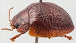
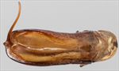
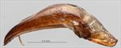
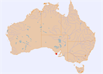

Click on images to enlarge
![Male, Port Lincoln, Eyre Peninsula, South Australia [PGK]](assets/image/Ta148/Ta148_APGK5790_SM.jpg){kind=link}

Male, Port Lincoln, Eyre Peninsula, South Australia [PGK]
{kind=link}

Aedeagus, dorsal view (Port Lincoln, South Australia)
{kind=link}

Aedeagus, lateral view (Port Lincoln, South Australia)
{kind=link}

Distribution
Name
Trachymela sp. Ta148
Reference specimen
PGK/5790, Port Lincoln, Eyre Peninsula, South Australia
Adult Description
Length: ♀ ? mm [0], ♂ 6.1 mm [1].
Colour: head: uniformly reddish-brown, labrum slightly paler, mandibles black-tipped; antennomeres 1-5 straw-brown, 6-11 grading slightly darker; pronotum: brown, same shade as head, with a narrow region adjacent to anterior edge behind head darker, almost black; scutellum: brown, same shade as pronotum, narrowly edged in darker brown; elytra: almost uniformly brown, same shade as pronotum, a few of the elevated verrucae, particularly in posterior half, fractionally darker than interstices; punctures of similar shade or fractionally darker than interstices; humeral callus concolorous with surrounds; venter: almost uniformly pale brown, with slightly darker colouring only on parts of thoracic ventrites, legs pale brown, epipleura light-brown. Cuticular wax: unknown.
Shape: uniformly curved and moderately rounded (H ♂=43%BL, ♀=?%BL), elytral summit well in front of middle of elytral margin; Head; puncture size moderate (pd~1.5-2.5xef), often poorly impressed and relatively evenly but densely packed. Antennae moderately long (AL ♂=39.1%BL, ♀=?%BL), filiform. Pronotum; almost evenly curved transversely throughout with extreme lateral margins very slightly explanate, foveal depression slight, a small, round elevation present behind centre of each eye, puncturation on disc mostly clearly impressed, with punctures similar in size or fractionally larger than on head but slightly more separated, relatively evenly distributed and moderately dense in discal area, interstices in discal area relatively smooth, not obscuring punctures, punctures becoming much coarser towards margin. Front margins join lateral margins in a smoothly rounded right-angle, with lateral margin straight for a short distance before curving smoothly and gradually towards rear margin. Scutellum; surface shagreened, unpunctured. Elytra; in lateral view, relatively strongly curved around elytral summit, then curvature becomes less towards apex, evenly curved transversely throughout with barely explanate margins, punctures moderately large and relatively evenly distributed, partially obliterated by rugose interstices in anterior two-thirds, small, mostly round and quite inconspicuous verrucae are scattered sparsely over the discal area with their density highest in the scutellar area and the posterior third, the post-basal depression is bordered posteriorly by a very slighly elevated and partially interrupted transverse ridge, several verrucae and elevated areas are present along discal margin, interstices usually relatively smooth, less often more convex, sometimes forming some inconspicuous transverse wrinkles posterior to transverse depression, surface continuous under humeral callus. Vertical extension of epipleura considerable (HCE/PW=0.44). Venter; Prosternal process narrowest anteriorly, widening gradually towards posterior, closed anteriorly, a scatter of short setae on prosternal process, absent from mesosternum, a single seta on anterior and median trochanter; front edge of metasternum beveled, truncate; inner edge of epipleura lacking setae. Aedeagus; relatively short (LPE=31.2%BL), in dorsal view, parallel-sided for a short distance from basal sulcus then sides diverging to about 25% of distance from apex, from where they converge gradually at first and then more rapidly rapidly to tip, ostial depression is in form of a broad ellipse, dorsal ostial processes wide with inner edges diverging suddenly in a straight line near apex to form a triangular gap at front of ostium; tip small and smoothly triangular; in lateral view, relatively thick from basal sulcus to about rear of ostium, from where it thins gradually and evenly towards apex, curved sharply through about 60⁰ near basal sulcus then ventral surface almost straight until shortly before apex, tip deflexed; flagellum moderately thick and gently curved.Larvae
unknown.
Eggs
unknown.
Notes
This species is so far known from a single male specimen, with its host give as Eucalyptus sp. It has few distinguishing features, but its aedeagus, with its broad, elliptical ostium, is distinctive.
Copyright © 2026. All rights reserved.